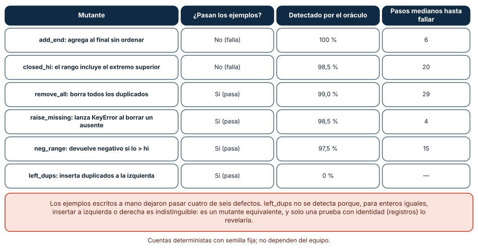
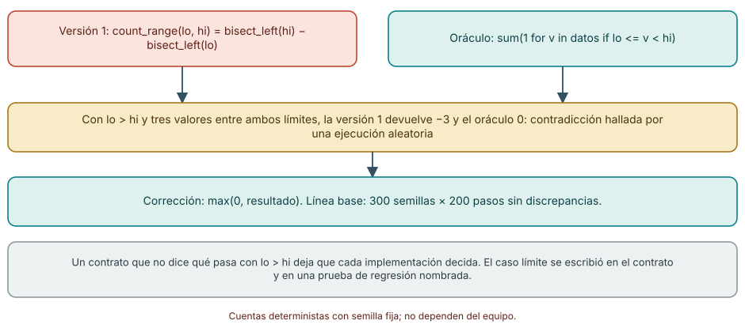
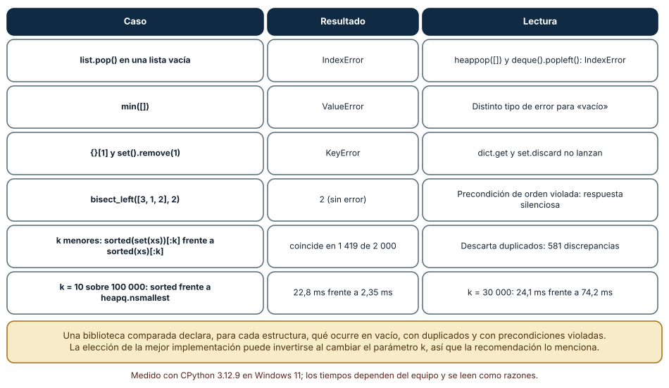

← SE-095 — Taller: elegir por carga y no por costumbre · ↑ Parte 07 · 📚 Índice completo · 🌐 Portal · SE-097 — Editores, IDE y servidores de lenguaje →
Punto profesional y fundamento pedagógico
Punto profesional. La clase existe para entregar una biblioteca con contratos, casos límite y comparaciones de costo.
Por qué aparece aquí. Se sitúa después de Taller: elegir por carga y no por costumbre y antes de Editores, IDE y servidores de lenguaje: convierte el conocimiento anterior en una decisión observable que la clase siguiente podrá reutilizar. La continuidad se comprueba en el artefacto, no por compartir vocabulario.
Error conceptual que debe corregir. Considerar correcta una API porque sus ejemplos pasan.
Secuencia de aprendizaje. Antes de leer la solución, el estudiante predice el resultado del caso normal y del error conceptual anterior. Luego explica un caso resuelto paso a paso, construye un contraejemplo que cambie la decisión y, sin consultar el texto, reconstruye el mecanismo y lo aplica a una entrada nueva. La secuencia usa predicción, explicación propia, contraste y recuperación. ICAP distingue participación de construcción de conocimiento; How People Learn II exige conectar conocimiento previo, contexto y transferencia; la práctica de recuperación respalda producir de nuevo la explicación tras una demora; y Education for Life and Work exige devolución que explique la causa del error.
Evidencia de aprendizaje. Biblioteca, pruebas de propiedades, benchmarks, documentación y límites. Debe contener predicción previa, observación, explicación causal, contraejemplo, criterio de aceptación y una nota de qué dato haría cambiar la conclusión.
Límite de la conclusión. La evidencia local no certifica seguridad ni rendimiento universal.
Trazabilidad fuente → afirmación
| Fuente primaria u oficial | Afirmación que respalda | Lo que no prueba |
|---|---|---|
| MIT 6.006 Introduction to Algorithms | Estructuras, algoritmos, corrección y análisis de complejidad; autoridad: MIT OpenCourseWare | No demuestra por sí sola que el artefacto del estudiante sea correcto. |
| Python Data Model | Semántica de secuencias, conjuntos, mappings, igualdad y hash; autoridad: Python Software Foundation | No demuestra por sí sola que el artefacto del estudiante sea correcto. |
| Python Debugging and Profiling | Timeit, cprofile y tracemalloc con sus límites; autoridad: Python Software Foundation | No demuestra por sí sola que el artefacto del estudiante sea correcto. |
| SWEBOK Guide v4.0a | Construcción, medición y fundamentos de ingeniería; autoridad: IEEE Computer Society | No demuestra por sí sola que el artefacto del estudiante sea correcto. |
Antes de empezar
Esta clase continúa la biblioteca de estructuras y algoritmos de la Parte 07. Recupera la evidencia de la clase anterior, añade una decisión propia de Proyecto: biblioteca comparada con casos límite y deja un artefacto que la clase siguiente deberá consumir. La pregunta activa es: ¿Cómo entregar una biblioteca comparada cuya corrección y rendimiento puedan discutirse con evidencia?
Prerrequisitos
- Haber completado la clase anterior o reconstruir su contrato y evidencia.
- Python 3.11 o posterior, terminal, editor y Git; un segundo runtime es opcional y debe declararse.
- Trabajar con fixtures sintéticos: ninguna observación necesita datos de una persona o sistema real.
Problema auténtico
La biblioteca de estructuras y algoritmos necesita una interfaz reusable de backlog con implementaciones para historial, prioridad e identidad. El proyecto debe impedir que una optimización cambie desempate o pierda casos límite.
Objetivos observables
Al terminar podrás explicar los cinco mecanismos de esta clase, predecir su comportamiento antes de ejecutar, construir un caso normal y uno límite, diagnosticar el fallo controlado, comparar una alternativa y entregar evidencia que otra persona pueda reproducir.
Mapa conceptual
Ver la notación fuente del diagrama
flowchart LR
N1[Contrato de la biblioteca] --> N2[Invariantes / pruebas de propiedades] --> N3[Casos límite / oráculo] --> N4[Benchmark versionado] --> N5[Informe / decisión]
N5 -->|fallo o cambio| N1El mapa se lee como una cadena de razonamiento, no como fases obligatorias del runtime. La flecha de retorno indica que un fallo o cambio de requisito obliga a revisar el modelo inicial; no autoriza a parchear solo la última salida.
Temas y por qué importan
| Tema | Por qué cambia una decisión profesional | Evidencia mínima |
|---|---|---|
| Contrato de la biblioteca | La API define tipos, operaciones, errores, orden y complejidad esperada. | Predicción, traza causal y contraejemplo de Contrato de la biblioteca en biblioteca |
| Invariantes y pruebas de propiedades | Cada implementación declara invariantes y prueba secuencias generadas: insertar-extraer conserva elementos, prioridad nunca aumenta incorrectamente y duplicado sigue política. | Predicción, traza causal y contraejemplo de Invariantes y pruebas de propiedades en biblioteca |
| Casos límite y oráculo | Vacío, uno, empates, duplicados, extremos y datos inválidos forman el corpus. | Predicción, traza causal y contraejemplo de Casos límite y oráculo en biblioteca |
| Benchmark versionado | El runner separa preparación y operación, verifica outputs, registra entorno y emite datos estructurados. | Predicción, traza causal y contraejemplo de Benchmark versionado en biblioteca |
| Informe y decisión | El README guía a consumidor, el informe explica mecanismos y la matriz recomienda por carga. | Predicción, traza causal y contraejemplo de Informe y decisión en biblioteca |
Conceptos y decisiones
1. Contrato de la biblioteca
La API define tipos, operaciones, errores, orden y complejidad esperada. Exponer la estructura interna impide sustituirla. Las garantías de costo se expresan con supuestos y no como promesa absoluta de latencia.
2. Invariantes y pruebas de propiedades
Cada implementación declara invariantes y prueba secuencias generadas: insertar-extraer conserva elementos, prioridad nunca aumenta incorrectamente y duplicado sigue política. Ejemplos concretos facilitan diagnóstico; propiedades exploran combinaciones.
3. Casos límite y oráculo
Vacío, uno, empates, duplicados, extremos y datos inválidos forman el corpus. Una implementación simple sirve como oráculo para tamaños pequeños. La comparación falla fuerte ante divergencia y conserva la secuencia mínima.
4. Benchmark versionado
El runner separa preparación y operación, verifica outputs, registra entorno y emite datos estructurados. Los umbrales evitan promesas frágiles entre máquinas; se comparan tendencias o presupuestos cuando son defendibles.
5. Informe y decisión
El README guía a consumidor, el informe explica mecanismos y la matriz recomienda por carga. Se declara qué no se midió: concurrencia, producción, otros runtimes o datasets. La honestidad del límite es parte de la entrega.
Un oráculo de referencia y seis defectos inyectados
El proyecto compara implementaciones con un contrato. Para medir la calidad de las pruebas, implementamos una secuencia ordenada con bisect y un oráculo trivial (una lista que se reordena y se recorre) y le inyectamos seis defectos (mutantes): add_end (añade al final sin ordenar), closed_hi (el rango incluye el extremo superior), remove_all (borra todos los duplicados), raise_missing (lanza KeyError al borrar un ausente), neg_range (resta negativa si lo > hi) y left_dups (inserta duplicados a la izquierda). Con ejemplos escritos a mano solo se detectaron dos (add_end y closed_hi); cuatro mutantes pasaron las pruebas de ejemplo. Con un oráculo diferencial de 200 semillas de 60 operaciones aleatorias, se detectaron cinco: 100 %, 98,5 %, 99,0 %, 98,5 % y 97,5 %, con una mediana de entre 4 y 29 pasos hasta el primer desacuerdo.
El sexto, left_dups, no se detectó nunca (0 %): para enteros, insertar un duplicado a la izquierda o a la derecha da una lista idéntica. Es un mutante equivalente respecto de este oráculo; solo se distinguiría con registros que tengan identidad y exijan estabilidad. Una suite diferencial no sustituye el diseño de qué observar.

Cómo leer la figura. Observa la columna «¿Pasan los ejemplos?»: la columna que debería asustar es «Sí». Dónde deja de valer: 200 semillas × 60 pasos no es una cobertura exhaustiva; un defecto raro puede escapar. Los mutantes los diseñé yo: un conjunto realista saldría de un historial de errores del proyecto.
El oráculo encontró un defecto en la referencia
La primera ejecución del oráculo diferencial, antes de inyectar mutantes, falló. La causa: count_range(lo, hi) restaba dos posiciones y, con lo > hi, devolvía un número negativo (por ejemplo −3), mientras que el oráculo (sum(1 for v in datos if lo <= v < hi)) devolvía 0. La implementación que se creía correcta tenía un hueco de contrato que ningún ejemplo escrito a mano había cubierto. La corrección fue max(0, resultado), y con ella la línea base pasó 300 semillas de 200 pasos sin discrepancias.
El caso se convirtió en una prueba nombrada y en una línea del contrato: «si lo >= hi, el conteo es 0». Es el patrón que justifica el proyecto: comparar implementaciones contra un oráculo obliga a decidir los casos límite que el diseño original dejaba abiertos.

Cómo leer la figura. Sigue las flechas: una entrada hace que dos implementaciones se contradigan, y la corrección vuelve a unirlas. Dónde deja de valer: el oráculo mismo puede estar mal. Aquí era tan simple que su corrección es evidente; en un proyecto real se revisa el oráculo con un tercer método o con casos calculados a mano.
Casos límite entre bibliotecas y una comparación con cruce
Sacar de una estructura vacía no es uniforme: [].pop(), heapq.heappop([]) y deque().popleft() lanzan IndexError; min([]) lanza ValueError; {}[1] y set().remove(1) lanzan KeyError. Una biblioteca comparada debe decidir si traduce a un solo error. Y hay errores silenciosos: bisect_left([3, 1, 2], 2) devuelve 2 sin ninguna excepción, aunque la precondición de orden está violada.
Una comparación de implementaciones «los k menores» mostró otro riesgo: la variante sorted(set(xs))[:k] coincidió con la de referencia en solo 1 419 de 2 000 casos (descarta duplicados), mientras que heapq.nsmallest y la selección repetida coincidieron en 2 000. En rendimiento, con 100 000 elementos y k = 10, sorted tardó 22,8 ms y heapq.nsmallest 2,35 ms; con k = 30 000, 24,1 ms frente a 74,2 ms. La mejor implementación se invierte con k, de modo que el informe final debe decir para qué rango de k vale cada una.

Cómo leer la figura. Las cuatro primeras filas son comportamientos de vacío o de precondición; las dos últimas son comparaciones con datos. Dónde deja de valer: se midió un solo tipo de dato (enteros pequeños con duplicados) y una sola biblioteca estándar. Otro intérprete o una biblioteca de terceros puede tener otro error para el mismo caso.
Definiciones de trabajo
- contrato de la biblioteca: la api define tipos, operaciones, errores, orden y complejidad esperada.
- invariantes y pruebas de propiedades: cada implementación declara invariantes y prueba secuencias generadas: insertar-extraer conserva elementos, prioridad nunca aumenta incorrectamente y duplicado sigue política.
- casos límite y oráculo: vacío, uno, empates, duplicados, extremos y datos inválidos forman el corpus.
- benchmark versionado: el runner separa preparación y operación, verifica outputs, registra entorno y emite datos estructurados.
- informe y decisión: el readme guía a consumidor, el informe explica mecanismos y la matriz recomienda por carga.
Las definiciones son operativas para la biblioteca de estructuras y algoritmos. No convierten términos con historia más amplia en sinónimos y deben contrastarse con la documentación primaria enlazada al final.
Ejemplo mínimo
python -m unittest -v
python -m algorithm_library.benchmark --sizes 100,1000,10000 --repeat 9 --output evidence/results.json
# El runner valida equivalencia antes de registrar tiempos.Antes de ejecutar, predice estado, resultado y error. Después registra versión, comando y salida. Si el fragmento es pseudocódigo o pertenece a otro lenguaje, etiquétalo como tal y no afirmes que fue ejecutado.
Ejemplo profesional
En la biblioteca de estructuras y algoritmos, un caso conserva identidad, prioridad, dependencias, instante de llegada y estado de resolución. La implementación de esta clase debe conservar ese contrato aunque cambie la forma interna. El caso profesional no pregunta únicamente si produce una salida: pregunta quién puede producirla, qué estado observa, cómo falla y qué rastro permite disputar una decisión incorrecta.
Compara el caso normal con autorización falsa, evidencia incompleta, empate y repetición. Un mecanismo es apropiado cuando esas diferencias quedan visibles y localizadas; es peligroso cuando dependen de orden accidental, estado oculto o una convención que el consumidor no puede conocer.
Práctica guiada
- Copia el contrato de entrada y salida antes de escribir implementación.
- Predice el caso normal y un límite; identifica la invariante que no puede romperse.
- Implementa la versión mínima sin I/O dentro del núcleo.
- Ejecuta el caso y conserva comando, versión y salida bajo
evidence/. - Introduce el fallo controlado, reduce la reproducción y formula dos hipótesis rivales.
- Corrige la causa, añade regresión y ejecuta el conjunto completo.
- Compara con otro paradigma o lenguaje indicando qué semántica se preserva.
Ejercicios
- Oráculo: implementa una secuencia ordenada con
bisecty un oráculo de lista; ejecuta 200 semillas y registra si coinciden. - Mutantes: inyecta tres defectos y compara cuántos detectan tus ejemplos y cuántos tu oráculo.
- Contrato: para tres estructuras define qué ocurre en vacío, con duplicados y con una precondición violada, y pruébalo.
- Informe: compara dos implementaciones de «los k menores» barriendo k y reporta el cruce y la memoria.
Reto verificable
Entrega implementación, fixtures, pruebas y un informe corto. Se aprueba si otra persona ejecuta desde checkout limpio, obtiene los mismos resultados y puede relacionar cada rama o transformación con una regla del dominio. No se aprueba por cantidad de archivos ni por usar la sintaxis característica del paradigma.
Caso conductor
La biblioteca de estructuras y algoritmos recibe casos del motor de reglas comparado, mantiene una frontera de trabajo priorizada y explica por qué el siguiente caso es elegible. Ejecuta una carga pequeña trazable, duplicados, prioridades iguales y una dependencia ausente. Cambia después una sola regla o condición y revisa qué archivos, pruebas y trazas debieron modificarse. Esa superficie de cambio alimenta el proyecto final de la parte.
Preguntas frecuentes
¿Qué es un oráculo de referencia?
Una implementación simple y evidentemente correcta contra la que se compara la rápida. Aquí era una lista que se reordena en cada operación.
¿Por qué no basta con pruebas de ejemplo?
Cuatro de seis defectos inyectados las pasaron; el oráculo diferencial detectó cinco. Los ejemplos reflejan lo que ya pensé; el oráculo explora lo que no.
¿Qué hago con un mutante que no muere?
Pregunta si es equivalente (left_dups con enteros) o si falta observabilidad. Si es equivalente, documenta por qué; si no, añade la prueba que lo distinga.
¿Cómo declaro el rendimiento en un informe comparado?
Con las cargas, los tamaños y el rango donde cada candidato gana: nsmallest ganó con k = 10 y perdió con k = 30 000.
Fallo controlado y diagnóstico
Optimiza la extracción y rompe estabilidad de empates. Una prueba basada solo en conjunto pasa; añade secuencia esperada y propiedad de orden estable antes de aceptar la mejora.
Registra síntoma, entrada mínima, hipótesis, observación que descarta cada hipótesis, causa, corrección y prueba de regresión. No cambies simultáneamente implementación, fixture y expectativa.
Ejecuta el oráculo diferencial sobre la implementación de referencia, antes de inyectar mutantes. Síntoma: falla con count_range(5, 2): −3 frente a 0. Hipótesis rivales: (a) el oráculo es incorrecto; (b) la implementación no define el caso lo > hi. Prueba: calcular a mano el conteo (0 elementos en un rango vacío) y revisar la resta de posiciones. Conclusión: el defecto es de la implementación; corrige con max(0, …), escribe el caso en el contrato y deja una prueba de regresión.
Errores comunes y cómo corregirlos
| Síntoma | Causa probable | Corrección |
|---|---|---|
| Todas las pruebas pasan y un defecto llega a producción | Pruebas solo con ejemplos | Añadir un oráculo diferencial con semillas y mutantes |
Dos implementaciones difieren con lo > hi | El contrato no define el caso | Escribir la regla en el contrato y una prueba nombrada |
| Un mutante sobrevive siempre | Es equivalente o el observador es insuficiente | Analizar si la diferencia es observable y documentar |
| La biblioteca devuelve resultados sin error con entradas inválidas | Precondición no comprobada (orden) | Validar en la frontera o documentar el riesgo |
| La recomendación final fue válida solo para un parámetro | Se midió un único k o tamaño | Barrer el parámetro y reportar el cruce |
Entorno y archivos clave
work/SE-096/
├── README.md
├── algorithm_library/
│ ├── domain.py
│ └── se_096.py
├── fixtures/cases.json
├── tests/test_se_096.py
└── evidence/diagnosis.mdEl README declara plataforma, runtimes, comandos, limpieza y límites. Evita dependencias externas cuando la biblioteca estándar permita observar el mecanismo; si agregas una, fija procedencia y versión.
Seguridad, ética y accesibilidad
- la autorización forma parte del dominio y no se infiere por ausencia de rechazo;
- no uses
eval, reglas descargadas ni serialización insegura; - limita colas, recursión, tamaño de entrada y tiempo de evaluación;
- redacta trazas y conserva una explicación textual además de color o animación;
- una recomendación automatizada debe poder revisarse, impugnarse y corregirse;
- respeta licencias de ejemplos y atribuye adaptaciones.
Puente hacia el trabajo con agentes
En el proyecto, un agente puede producir código plausible para cada estructura y pasar los ejemplos. El control relevante es el oráculo diferencial con semilla fija y los mutantes: si el agente no mata los mutantes que tú inyectas, sus pruebas son decorativas. Entrega al agente el contrato (vacío, duplicados, precondiciones) como texto verificable, y pide un informe que liste los mutantes sobrevivientes y por qué.
Transferencia
Traslada un fixture al segundo modelo o lenguaje. Compara representación de ausencia, error, mutabilidad, orden y cancelación. La transferencia está lograda cuando el contrato se conserva y las diferencias están explicadas, no cuando la sintaxis se parece.
Evaluación y evidencia
| Criterio | Evidencia para aprobar |
|---|---|
| comprensión | explicación causal de los cinco mecanismos |
| corrección | normal, límite, inválido y contraejemplo |
| diseño | estado, efectos y contrato localizables |
| diagnóstico | reproducción mínima y regresión |
| transferencia | comparación semántica, no estética |
| reproducibilidad | versiones, comandos, salida y límites |
Fuentes
- MIT 6.006 Introduction to Algorithms — Estructuras, algoritmos, corrección y análisis de complejidad; autoridad: MIT OpenCourseWare.
- Python Data Model — Semántica de secuencias, conjuntos, mappings, igualdad y hash; autoridad: Python Software Foundation.
- Python Standard Library — Deque, heapq, bisect, graphlib y contenedores disponibles; autoridad: Python Software Foundation.
- Python Debugging and Profiling — Timeit, cprofile y tracemalloc con sus límites; autoridad: Python Software Foundation.
- Mathematics for Computer Science — Inducción, grafos, conteo y razonamiento discreto; autoridad: MIT OpenCourseWare.
- SWEBOK Guide v4.0a — Construcción, medición y fundamentos de ingeniería; autoridad: IEEE Computer Society.
Cada fuente respalda el mecanismo indicado; ninguna demuestra que la implementación de la biblioteca de estructuras y algoritmos sea correcta. Esa afirmación depende de fixtures, pruebas, trazas y revisión reproducible.
- Jia y Harman, «An Analysis and Survey of the Development of Mutation Testing» (IEEE TSE, 2011) — pruebas de mutación y mutantes equivalentes.
- Hypothesis: pruebas basadas en propiedades — generación aleatoria y reducción de casos para pruebas diferenciales.
- Python:
unittest— marco de pruebas usado en el laboratorio. - Python:
heapq.nsmallest— contrato y notas de rendimiento según el tamaño de k.
Límites y siguiente paso
La biblioteca demuestra comportamiento en el corpus y protocolo declarados, no superioridad universal. La Parte 8 tomará un fallo y una regresión de la biblioteca de estructuras y algoritmos para construir un entorno de diagnóstico reproducible.
Glosario
- contrato de la biblioteca: la api define tipos, operaciones, errores, orden y complejidad esperada.
- invariantes y pruebas de propiedades: cada implementación declara invariantes y prueba secuencias generadas: insertar-extraer conserva elementos, prioridad nunca aumenta incorrectamente y duplicado sigue política.
- casos límite y oráculo: vacío, uno, empates, duplicados, extremos y datos inválidos forman el corpus.
- benchmark versionado: el runner separa preparación y operación, verifica outputs, registra entorno y emite datos estructurados.
- informe y decisión: el readme guía a consumidor, el informe explica mecanismos y la matriz recomienda por carga.
← SE-095 — Taller: elegir por carga y no por costumbre · ↑ Parte 07 · 📚 Índice completo · 🌐 Portal · SE-097 — Editores, IDE y servidores de lenguaje →